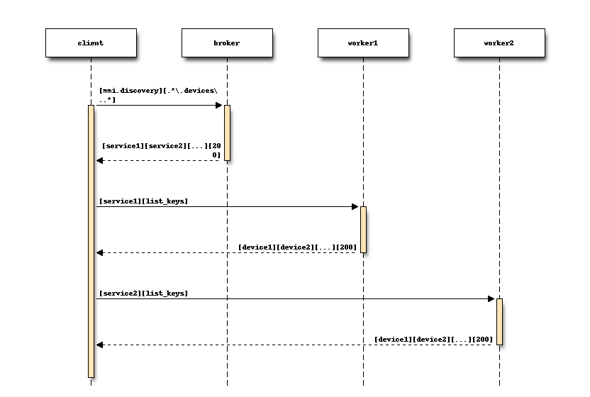

Bases: raspy.common.executive.Executive
Majordomo Protocol broker and key/value proxy.
Discovery process
Here is the way for a client to discover all devices on network

You can do the same for crons and scenarios
Deletes worker from all data structures, and deletes worker.
Disconnect all workers, destroy context.
Dispatch requests to waiting workers as possible
Process a request coming from a client.
Process message sent to us by a worker.
Look for & kill expired workers.
Workers are oldest to most recent, so we stop at the first alive worker.
Locates the service (creates if necessary).
Finds the worker (creates if necessary).
Main broker work happens here
Send heartbeats to idle workers if it’s time
Send message to worker.
. If message is provided, sends that message.
Handle internal service according to 8/MMI specification
Shutdown the broker.
This worker is now waiting for work.
Bases: threading.Thread
The publisher
from : http://zguide.zeromq.org/page:all#Working-with-Subtrees
Run the proxy
Send one state snapshot key-value pair to a socket
Shutdown the proxy.
Bases: raspy.common.server.Server
The Core server
Create a worker to handle cron requests
Create a worker to handle scenario’s requests
Create a worker to handle scenarios requests (list_keys, ...)
Bases: threading.Thread
A scenario
The code we must exec
The configuration of the scenario
The entries we must look at for an event driven scenario
Check if the scenario must be fired using entries and that is not already running. If so, call sself.run()
| Returns: | True if the thread must be launch (self.run()), False otherwise |
|---|---|
| Return type: | boolean |
Load the scenario from titanic store
| Parameters: | store – the store to get info from |
|---|---|
| Type: | titani_store |
| Returns: | True if the scenario was loaded from store |
| Return type: | boolean |
Run the scenario
Is the scenario running
Shutdown the scenario
Store the scenario to titanic store
Bases: object
The manager of scenarios
http://etutorials.org/Programming/Python+tutorial/Part+III+Python+Library+and+Extension+Modules/Chapter+13.+Controlling+Execution/13.1+Dynamic+Execution+and+the+exec+Statement/ http://lucumr.pocoo.org/2011/2/1/exec-in-python/ http://late.am/post/2012/04/30/the-exec-statement-and-a-python-mystery
Add a scenario
Delete a scenario
Return all scenarios with conf, entries, ... as json dict
Return all scenarios key (=name) ... as json list
Load the scenarios from titanic store
store keys :
- scenario.main.conf : a json dict for configuration of scenario
- scenario.main.keys : a json list of the scenario’s names
- scenario.key1.conf : a json dict for configuration of scenario key1
- scenario.key1.entries : a json dict of entries of scenario key1
- scenario.key1.code : a json string of code of scenario key1
The scenarios
Shutdown the scenario manager
Store the scenarios to titanic store
Update a scenario
Bases: raspy.common.server.Server
A fake server to test RasPy
Create a worker to handle devices requests
Bases: raspy.common.server.Server
The logger server
Will log data, events, ... in files, rrd, ...
It can be called via the worker or it can log data in pthe publisher
From : http://segfault.in/2010/03/python-rrdtool-tutorial/ From :
Bases: raspy.common.server.Server
The OneWire server
You need to load kernel module :
sudo vim /etc/modules
# /etc/modules: kernel modules to load at boot time.
#
# This file contains the names of kernel modules that should be loaded
# at boot time, one per line. Lines beginning with "#" are ignored.
# Parameters can be specified after the module name.
w1-therm
w1-gpio pullup=1
i2c-dev
i2c-bcm2708
spi-bcm2708
snd-bcm2835
And check that blacklist is correct :
sudo vim /etc/modprobe.d/raspi-blacklist.conf
# blacklist spi and i2c by default (many users don't need them)
blacklist spi-bcm2708
blacklist i2c-bcm2708
blacklist snd-soc-pcm512x
blacklist snd-soc-wm8804
At last, we must load the module in init script sothat we don’t need to update this.
From https://www.modmypi.com/blog/ds18b20-one-wire-digital-temperature-sensor-and-the-raspberry-pi
Create a worker to handle devices requests
Bases: raspy.common.executive.Executive
The Titanic helper
Also integrates a store for keys/values
Returns freshly allocated reply filename for given UUID
Returns freshly allocated request filename for given UUID
Run the hub
Attempt to process a single request, return True if successful
Returns store filename for given service
Create a worker to handle titanic.close
titanic.close: confirm that a reply has been stored and processed.
Create a worker to handle titanic.service
titanic.reply: fetch a reply, if available, for a given request UUID.
Create a worker to handle titanic.request
titanic.request: store a request message, and return a UUID for the request.
Create a worker to handle store services